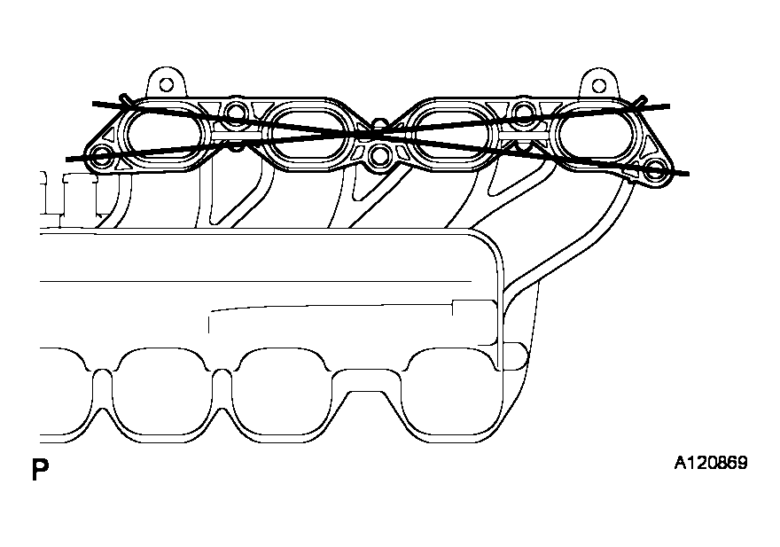
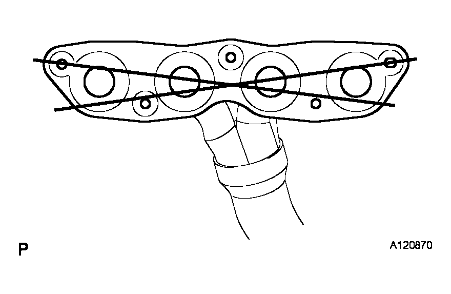

Engine Assembly: Inspection
- INSPECT INTAKE MANIFOLD
- Using a precision straightedge and feeler gauge, measure the surface contacting the cylinder head for warpage.

Courtesy of © TOYOTA, LICENSE AGREEMENT TMS1002Maximum warpage: 0.10 mm (0.004 in.)
If the warpage is greater than the maximum, replace the manifold.
- Using a precision straightedge and feeler gauge, measure the surface contacting the cylinder head for warpage.
- INSPECT EXHAUST MANIFOLD
- Using a precision straightedge and feeler gauge, measure the surface contacting the cylinder head for warpage.

Courtesy of © TOYOTA, LICENSE AGREEMENT TMS1002Maximum warpage: 0.70 mm (0.028 in.)
If the warpage is greater than the maximum, replace the manifold.
- Using a precision straightedge and feeler gauge, measure the surface contacting the cylinder head for warpage.